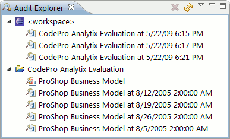
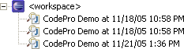
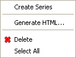
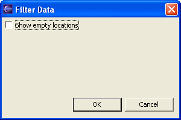

Audit Explorer
|
 |
The Audit Explorer displays the resources created by and associated with the code audit feature. There are two kinds of resources that are currently displayed in the Audit Explorer.
- Audit Result Set
An audit result set is the set of violations resulting from auditing a set of resources. The violations in an audit result set can be viewed in the Audit view.
- Audit Series
An audit series is a report based on a series of audit result sets. An audit series can be opened in an Audit Series editor to allow the report to be configured, and can also be used to generate an HTML representation of the report. To open an audit series editor, double click on the audit series in this view.
The resources displayed in this view are grouped into storage locations based on where the resources reside. There are two kinds of storage locations.
- Workspace Location
There is a single workspace location that is accessible to only the current workspace. The workspace location is where new resources are created by default. For example, when an audit is manually performed, the audit result set is placed in the workspace location.

Project Locations
There is a project location for each project that is currently loaded in the workspace. The project location is physically located within the directory structure containing the project, so it can be shared by all of the developers that have that project loaded. (The storage location for projects is located within a directory named
.codeprofound at the top level of the project directory.)There is a filter option that controls the visibility of project locations that are either empty or non-existent. If a project does not appear in the tree, check the setting of this option.
The resources displayed in this view can be copied and moved to other locations using the standard drag-drop gestures for the current platform.
Right-clicking on a resource will display the following menu:

The Create Series menu item will create a new audit series in the currently selected location (if a location is selected) or the location containing the currently selected resource (if a resource is selected). If a single audit result set is selected, then the newly created series will be initialized to contain the selected result set.
The Generate HTML... menu item will cause an HTML report to be generated from the currently selected audit series. You will be prompted for the location of the HTML file.
The Delete menu item will cause the currently selected resources to be deleted from the external storage.
The Select All menu item will cause all of the resources to be selected.
 Delete Button
Delete Button
Clicking on the Delete button will cause the currently selected resources to be deleted from the external storage.
 Refresh Button
Refresh Button
Clicking on the Refresh button will cause the contents of the view to be refreshed based on the contents of the external storage.
 Filter Menu Item
Filter Menu Item
Selecting the Filter... menu item will open a dialog where you can select whether projects will be shown if their storage location is either non-existent or empty.
